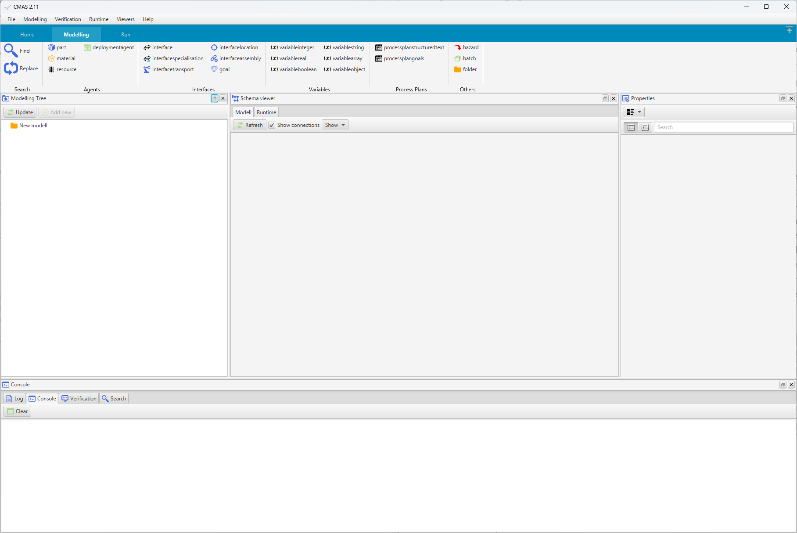
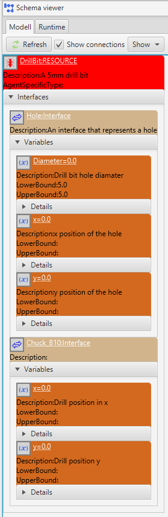
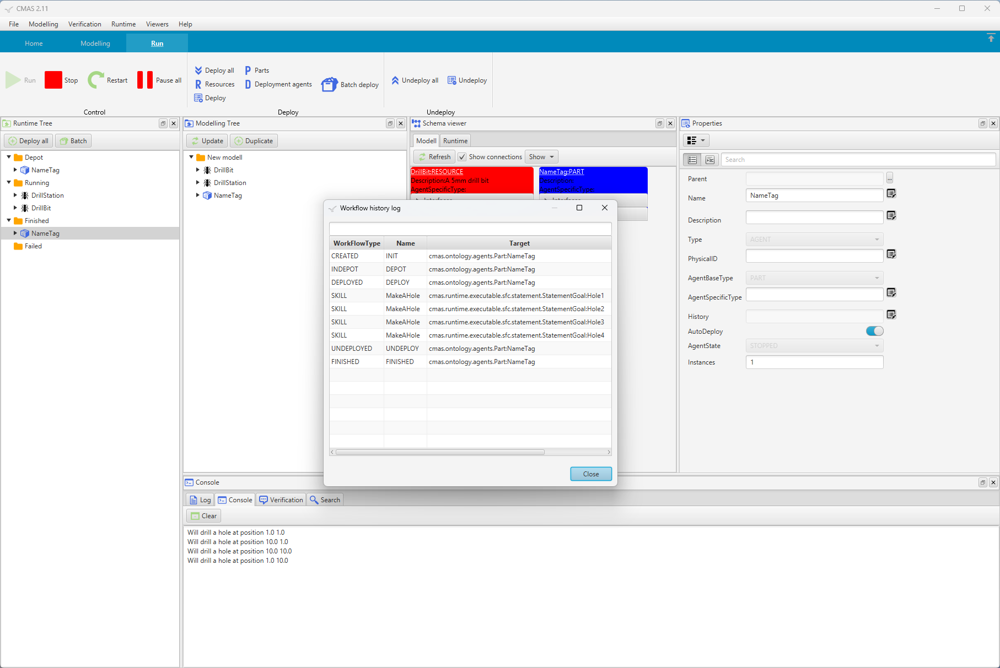
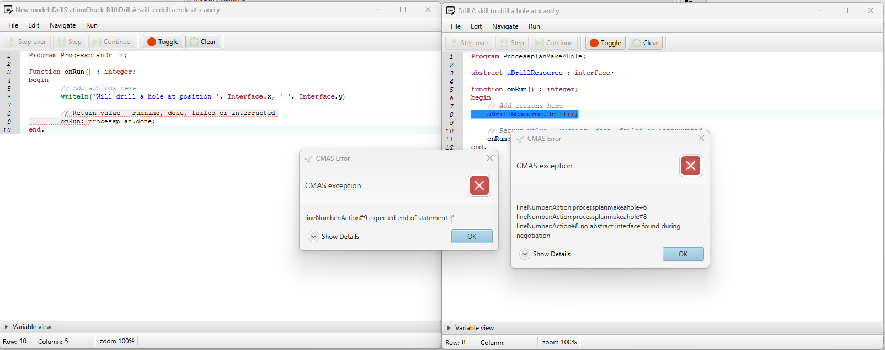
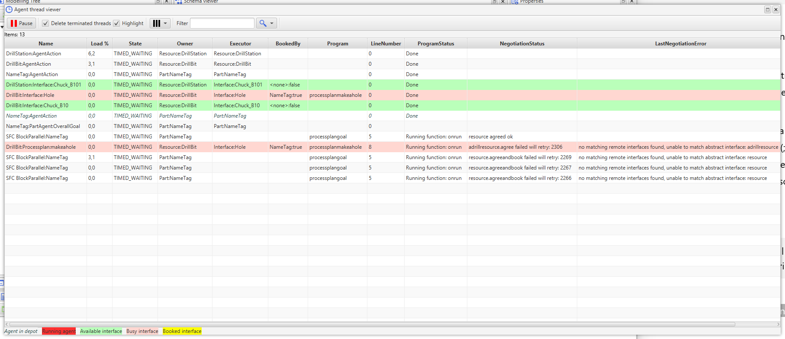

To perform a real configuration for the scenario described in the introduction how to use CMAS, let’s create a simplified example focusing on the goals for drilling holes in the name tag. The manufacturing process involves a drill station and its associated drill bits. We will begin by designing a basic model of the agents needed. The resources are divided into two distinct resource agents: DrillBit and DrillStation. Additionally, a Part Agent is required to represent the name tag being manufactured.

Now start the CMAS tool, it should look something like this.

The first step is to add a resource agent. In CMAS, you can use the Modeling Tree viewer located on the left side. This is the primary interface for modeling and displays all entities within the model.
At the top of the CMAS window, you will find the main toolbar, organized into different categories across various tabs. Begin by switching to the Modeling tab. Each tab is further divided into groups. Within the Modeling tab, locate the Agents group. Click the [resource] button to create a resource agent, which will then appear in the Modelling Tree viewer.
[resource] button to create a resource agent, which will then appear in the Modelling Tree viewer.
When the new entity is created it is automatically added to the Modelling Tree and selected. You can see all properties of the selected entity to the right in the Properties viewer. To be able to find our new resource in the system we need to give it a friendly Name, lets name it DrillBit. You can change the name by navigating to the Properties viewer and replace the automatically generated name with DrillBit. Further, it is also possible to give a more detailed description of the resource in the Description. The Entity ID is a unique string used by the platform to keep track of our agents during runtime. It is possible to give Entity IDs manually but usually it is best to let the system decide an Entity ID automatically.

The next step is to assign interfaces to our drill bit agent. An interface is a defined way for agents to communicate or interact with each other. An interface also represents physical and logical compatibility. Our drill bit needs to interact with two other agents, the name tag and the drill station. Hence, we need two interfaces, the first to be able to drill a hole in a part and the second to be able to utilise a drill station for rotation of the bit (our self).
| # | Interface name | Description |
|---|---|---|
| 1 | Hole | Enables the drill bit to create holes in the name tag. |
| 2 | Chuck_B10 | Allows the drill bit to interact with the drill station for rotation of the bit . |
First, create the Interface to interact with parts. To do this expand the DrillBit resource in the modelling view and select the relation Interfaces. When the Interfaces is selected press the [interface] button in the interface group in the tool bar. While the new interface is selected in the modelling tree view go to the properties view and change the name to Hole.
To reflect the size of the hole we need a variable. On the Hole interface let's create an Interface variable named Diameter. To add variables to an Interface expand the interface in the modelling view and select the relation Variables. When the relation variables is selected press the [variablereal] button in tool bar to create a new variable. Now go to the properties view and change the variable name to Diameter, also set the UpperBound and LowerBound to 5.0 to represent a diameter of exactly 5 mm. Our drill bit interface is now compatible with holes that have a diameter of 5.
Further, a hole also has a position lets create two more Interface variable called x and y. We can use the same type VariableReal to represent a real number. We do not give a range here, hence, any range will be compatible with these variables. With this modelling strategy it is now possible to create several drill bits with the same interfaces and name but with different diameters.

We also need to create a Skill on the Hole interface. A skill represents an action that other agents can use to change the state of the world, in this case to make a hole by the use of our drill bit resource agent. Now select the Interface Hole and select the relation Skills. Click the [processplanstructuredtext] button on the tool bar. Go to the properties view and name the new skill MakeAHole. We can leave the other skill details for now and come back to them later.
[processplanstructuredtext] button on the tool bar. Go to the properties view and name the new skill MakeAHole. We can leave the other skill details for now and come back to them later.

The DrillBit by itself cannot make a hole since it cannot rotate nor fixate. Therefore, it must utilise another resource, a drill station of some kind. To be able to interact with a drill station we need another interface. Let us, therefore, create a new interface named Chuck_B10 on the resource. Remember that the DrillBit agent knows the position of the hole through the first interface but cannot make use of it. Therefore, the hole position must be transferred to the drill. For that reason, add two Interface variables to the Chuck_B10 interface namely, x and y. The DrillBit agent is now configured. It is now possible to create many drill bits in the same way representing different chucks or hole diameters. Our configuration can now be visualised in a figure.

This figure can also be viewed in CMAS using the Schema Viewer. The Schema Viewer visualizes all agents and their interfaces, and for part agents it also displays their goals. Compatible interfaces between agents are represented by connecting lines.

Now create a drill station as a Resource Agent with a compatible interface to our drill bit Chuck_B10 with two Interface variables named x and y. Also, create an empty skill named Drill on the same interface.
Now when the resources are ready the next step is to create a Part agent that will be the virtual representation of the product, name tag. To add a part agent select the root in the modelling tree and press the [part] button in the tool bar. Change the name to NameTag for our new part.
On the Part agent we need to create four holes each hole will be expressed as a Goal. A Goal is something a Part agent will try to fulfil by utilising Process plans and/or Skills. To add a Goal expand the Part agent in the modelling view and select the relation Goals and click the [goal] button on the tool bar. Change the name of the new Goal to Hole1. To reach the goal we need to name a good Process plans. To do this select the button [...] behind the ProcessPlanName to get a list of available process plans and select MakeAHole. Now we have a Goal to get a hole but we also need to give information on where we want the hole.
[goal] button on the tool bar. Change the name of the new Goal to Hole1. To reach the goal we need to name a good Process plans. To do this select the button [...] behind the ProcessPlanName to get a list of available process plans and select MakeAHole. Now we have a Goal to get a hole but we also need to give information on where we want the hole.
To do this we need to create Goal variables. Expand the Hole1 in the modelling tree and select Variables and the click the [variablereal] button on the tool bar. Now create two VariableReal variables and name them x and y. For x set the Value to 1 and y to 1. Further, also create a variable called Diameter and set the Value to 5.0. In this way, we create a demand for our Part agent to only consider a hole with a specific diameter of 5.0.
In the same way, as we added Interfaces to our Resources we have now created an interface on our goal. The main difference is the minor adjustment needed while designating the interface name in the context of a Goal. In the properties view for the goal click the button [...] behind Interface property. You should now get a list of available interface names. Select the Hole interface in the list. This is a convenient way to set the name of the interface.
Now, in the same way create three more goals with the same variables but with different values. This can be done by selecting Hole1 in the modelling view and press [Duplicate] button in the modelling view. You will now get a copy of the Goal Hole1 and you can easily rename it to Hole2 and set new values for x and y. To easier see the difference between all goals you can give more details in the Description field. The Part agent is now ready and should look something like this.

To make unique positions for each hole change the x and y variables for goal 2, 3 and 4 to:
| Goal | x | y |
|---|---|---|
| Hole1 | 1 | 1 |
| Hole2 | 10 | 1 |
| Hole3 | 10 | 10 |
| Hole4 | 1 | 10 |
A Process plan is a description on how to reach goals. Process plans can be created on many different levels but for now let's focus on the part NameTag. Select the NameTag in the modelling view and in the properties view you can open the ProcessPlan editor by pressing [Edit].
A new editor will open.

The start and the end of the ProcessPlan is indicated in the editor. It is now possible to drag the Goals from the goal view in to the editor. However, since there is no specific order of the 4 holes we can say to the system that any order is valid. To do this drag the Parallel statement from the statement view and drop it on the start statement. The parallel statement will then be inserted after the start statement.

The Parallel statement is now visible as some parallel lines. Now drag each Goal in the goal list and drop them on the top line of the Parallel statement.

The editor now shows all 4 goals in parallel. It is also possible to see and change the name of each goal and the interface name and the requested process plan name in the editor. Now close the editor.
We also need to define the skill for MakeAHole on the DrillBit agent. To do this select the skill MakeAHole in the modelling view and in the properties view press the button Actions. The process plan for the skill is now visible, this is a Structure Text process plan. We now have the flexibility to describe in Structure Text what we want to achieve. This is an alternative to the Goal oriented process plan used for the part.
What we need to do is to add actions on how to drill with the bit. The drill bit need another resource to be able to make a hole, i.e. the drill bit by it self cannot make a hole. That resource must have an interface that is compatible with our interface. However, we do not care about which resource it is at this planning stage we just want it to be a resource interface that we can use. This unknown but required interface we can refer to as an abstract interface and all abstract interfaces must be declared at the top of a process plan. To be able to refer to this abstract interface in our process plan we give it a name when we declare it. It is possible to declare as many abstract interfaces as we wish in a process plan but for this plan one is enough. In the main block in-between Begin and End we need to give the details on what we want to accomplish and how to make us of our abstract interface.
The position of the hole is something that we need to give when we ask for the skill MakeHole. We can do that by assigning the position from the goal (Goal.x) to the skills interface variable. However, since we have declared all variable on the interfaces all values are transfered automatically.
An abstract interface is a way to describe what kind of resource we need without a hard link to a specific resource. An abstract interface is converted to a real interface by a negotiation process during runtime.
When defined, it is possible to use the abstract interface and request a skill by using the abstract interface.
You can now close the editor for the skill MakeAHole.
Now we need to do the same for the Drill station to define a skill.
The action for the skill Drill on the DrillStation is to now move the spindle to the right position and and start the spindle. To simplify we only write some messages on the console with writeln. Note, that it is indeed possible to control a real drill station within the skill or to send messages/set signals to an external controller.
Our configuration should now look something like this and this is now our flexible control system.

We are now ready to test our configuration in the runtime environment. By pressing the [Run] button on the tool bar (first switch tab to Run), instances of our configuration will be transfered to the runtime environment. A new runtime tree viewer will open to visualise the runtime environment. The tree is divided in four different areas the first is called Depot. This is an area where agents that are ready to be deployed will remain until they are deployed manually, automatically by CMAS or by user logic.
[Run] button on the tool bar (first switch tab to Run), instances of our configuration will be transfered to the runtime environment. A new runtime tree viewer will open to visualise the runtime environment. The tree is divided in four different areas the first is called Depot. This is an area where agents that are ready to be deployed will remain until they are deployed manually, automatically by CMAS or by user logic.

We are now ready to deploy our agents and can do that by pressing the [Deploy all] button in the runtime view. If you want to deploy each agent individually right click on the agent a chose deploy or make use of the main tool bar. When an agent is deployed it will move to the Running area. When a part agent is deployed and move to the Running area a new part is generated in the Depot ready to be deployed.
In bottom of CMAS you should have a console window that display user outputs from agents. With our writeln call inside the skill Drill we should now be able to see that the drill will produce 4 holes. When a part agent has reached all goals it will be moved to the Finished or Failed area depending on the result. You can expand the Finished area to see the part and check that all goals has become ready and green.
It is now possible to produce as many name tags as desired by deploying new NameTag agents with the [Deploy all] button. To stop the runtime environment press the [Stop] button.
You can also view the history of a finished part. To do so, select the part you want to examine from the Finished folder. Right-click on the part to open the context menu and choose Show History. A new window will open, displaying the complete history of the part.

Of course it is possible to add print outs for other activities to see what´s going on. Print outs is one way to see activities in the system. An example of the process plan GetHole with print outs:
Sometimes, identifying errors or mistakes in the model can be challenging, as they are typically discovered during runtime. If you encounter a compiler error (such as a mistake in a Structured Text skill), try following the prompts in the dialog boxes. These will guide you to the correct editor and highlight the line that caused the error. Additionally, note that the editor will display a red underline to help you identify errors as you code.
In some cases, you may see multiple error dialogs due to a single mistake. As in this example, the primary error is a missing semicolon (;) at the end of the statement on line 6 in the ProcessPlanDrill program. However, when the ProcessPlanMakeAHole attempts to use the skill, it will also fail due to the problem to execute the skill.

Another common issue is when nothing happens after deploying all your agents. To troubleshoot and see what is happening in the system, you can open the Agent Thread viewer.
This viewer shows the negotiation status for all agents. In this example, you can observe that the busy ProcessPlanMakeAHole on the Hole interface of the DrillBit resource is unable to find any matching interfaces during the negotiation process.

To check interface compatibility, you can use the Schema viewer. At the top of the Schema viewer, change the Show dropdown menu to Show folder or selection content. Then, select the agent you want to check. The schema viewer will display the agent, and all compatible agents will be connected by lines. If any connections are missing, it indicates a problem with the interfaces. For compatibility, the interfaces must match in both name and variables.
It is also possible to select a specific interface in the model viewer. Right-click on the interface to open the context menu and choose Verify Interface. This will display a list of all compatible interfaces.
Another way to check for errors is by using Project Verification. Change the console view to Verification and click the Verify Project button. CMAS will then attempt to detect any possible errors. Note that, since we are not running the system, it can be challenging to check complex, abstract interfaces during the modeling phase. E.g, interface variables are only updated during runtime if they are depend on external signals.